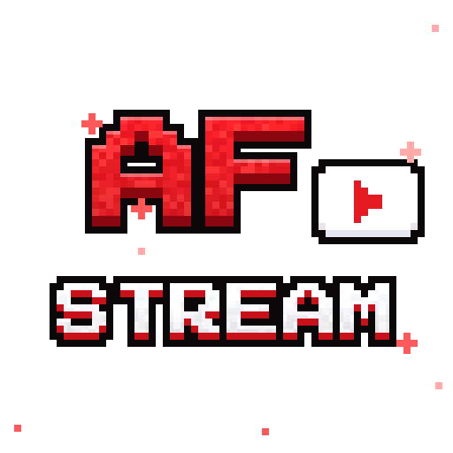
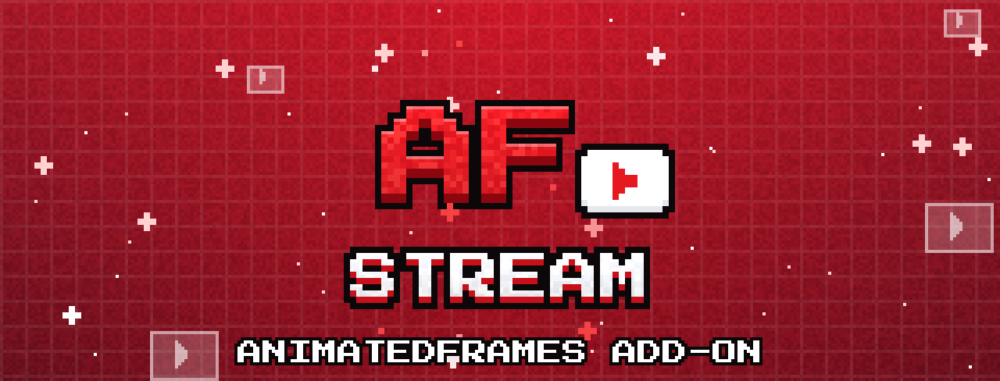

Para que sirve
AnimatedFrames puede reproducir links de YouTube. Con este mod instalado, el link se lee directo desde el juego y el video empieza en 1 segundo mas o menos.

AF Stream Add-on
Complemento opcional
Hace que los links de YouTube de AnimatedFrames carguen en 1 segundo mas o menos. Solo va en el cliente y es un solo JAR para todas las versiones.
Un mod chico que acompana a AnimatedFrames.
AnimatedFrames puede reproducir links de YouTube. Con este mod instalado, el link se lee directo desde el juego y el video empieza en 1 segundo mas o menos.
AnimatedFrames sigue reproduciendo YouTube, pero usa yt-dlp: tarda 2–3 segundos y la primera vez lo descarga de GitHub.
YouTube cambia su web seguido. Cuando eso rompe los links, solo hay que actualizar este mod chico. AnimatedFrames no se toca.
Elige la mejor calidad hasta 1080p. Los directos arrancan en lo ultimo en vivo.
Lo pone cada jugador en su Minecraft.
[AF]AnimatedFrames-StreamAddon-1.0.0.jar. Es el mismo archivo para todas las versiones y loaders.mods, al lado de AnimatedFrames./mediac show "https://youtu.be/XXXX" 0 center 1 80.No hace falta en el servidor. Si lo pones igual, no pasa nada.
Que pasa cuando se manda un link de YouTube.
/medias show, /mediac show, la cola o un bloque Pantalla).Un solo JAR sirve para todas.
Accesos rapidos.
Optional add-on
Makes AnimatedFrames YouTube links load in about 1 second. Client only, and one JAR for every version.
A small mod that goes along with AnimatedFrames.
AnimatedFrames can play YouTube links. With this mod installed, the link is read straight from the game and the video starts in about 1 second.
AnimatedFrames still plays YouTube, but uses yt-dlp: it takes 2–3 seconds and is downloaded from GitHub the first time.
YouTube changes its site often. When that breaks links, only this small mod needs an update. AnimatedFrames stays the same.
Picks the best quality up to 1080p. Live streams start at the live edge.
Each player adds it to their own Minecraft.
[AF]AnimatedFrames-StreamAddon-1.0.0.jar. It's the same file for every version and loader.mods folder, next to AnimatedFrames./mediac show "https://youtu.be/XXXX" 0 center 1 80.It's not needed on the server. If you add it there anyway, nothing happens.
What happens when a YouTube link is sent.
/medias show, /mediac show, the queue or a Screen block).One JAR works for all of them.
Quick access.